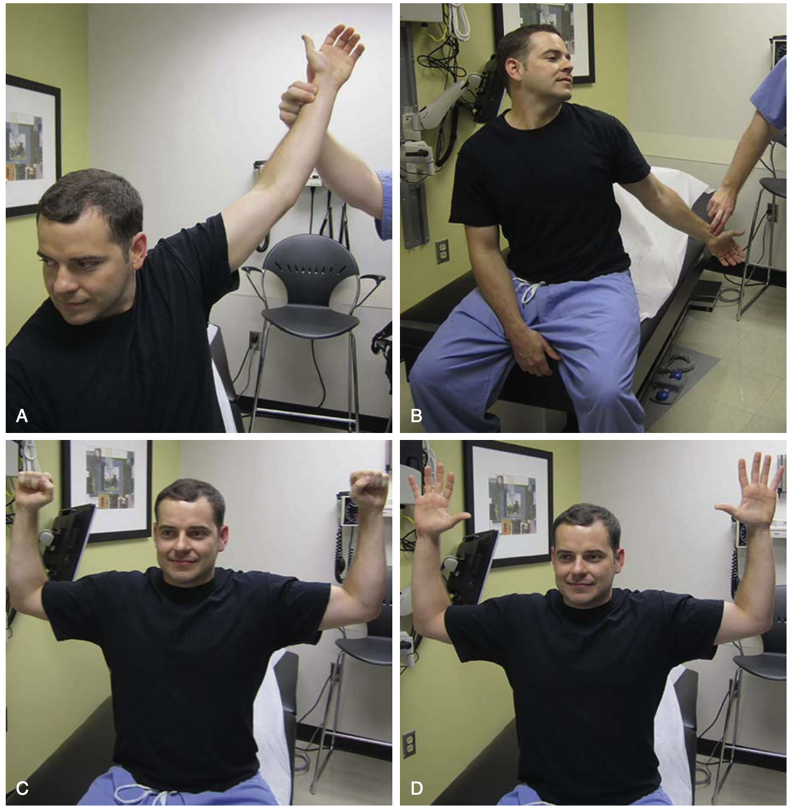
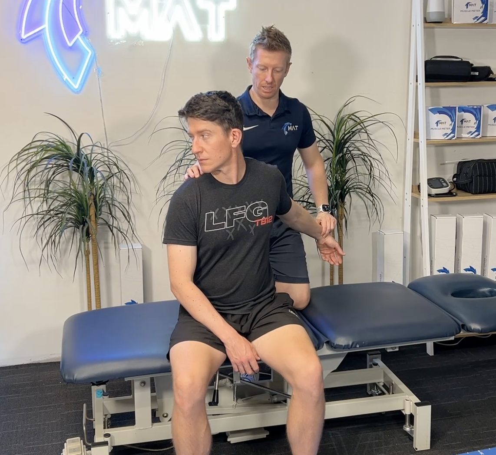

定義
- 鎖骨下血管（subclavian vessels）與臂神經叢（brachial
plexus）在胸廓入口區域（斜角肌三角 scalene triangle）受到壓迫
流行病學
分類
- 斜角肌間三角（interscalene
triangle）：壓迫動脈與神經
- 鎖骨下間隙（costoclavicular
space）：壓迫靜脈
- 喙突下區域（subcoracoid
area）：壓迫動脈、靜脈與神經
病因
- 外力創傷：頸部過度伸展
- 重複性肩膀外展外旋：運動員（網球、棒球、游泳、反覆投擲）、提重物時高於頭部（overhead）
- 解剖結構異常
- 骨骼：異常的頸肋（cervical
rib）、鎖骨骨折、第一肋或鎖骨的骨贅/刺（exostoses）
- 軟組織
- 肌肉肥大：運動員與健身者
- 姿勢不良、肥胖
- 血腫
- 腫瘤：Pancoast
tumor
臨床特徵
- 神經性症狀（90-95%）
- 感覺喪失或感覺異常：常沿尺神經分布
- 頸、手臂疼痛
- Gilliatt-Sumner Hand：手部內在肌肉萎縮，包括
- 包括魚際肌（thenar）、小魚際肌（hypothenar）、蚓狀肌（lumbricals）、骨間肌（interossei）
- 血管性症狀
- 鎖骨下動脈壓迫（< 1%）
- 手臂痠痛、疲勞
- 5P 症狀：無脈搏（pulselessness）、疼痛（pain）、蒼白（pale）、感覺異常（paresthesia）、溫度調節異常（poikilothermia）
- 鎖骨下靜脈壓迫（3%）
- 手臂疼痛、沉重感
- 側枝循環形成、發紺
- Paget-Schroetter syndrome：上肢水腫、靜脈怒張或運動型血栓形成
- 血栓形成：少數情況下血栓可能導致遠端栓塞，造成 Raynaud
phenomenon 或缺血變化（ischemic change）
診斷
- 理學檢查（Physical
Examination）
- Wright
test（過度外展測試）
- 將病患肩膀外展至 90°，再外旋、肘部屈曲，接著將雙臂過度外展至頭部上方（Hyperabduction）
- 此動作會使神經血管可能在喙突下區域（subcoracoid region）受到壓迫（胸大肌腱、肱骨頭或喙突壓迫）
- 陽性：橈動脈搏動變弱或消失
- Adson
test（斜角肌測試）
- 先觸診橈動脈脈搏，然後將病患手臂外展 90°、外旋並伸展，請患者仰頭並將頭轉向患側，同時深吸氣，再次觸診橈動脈
- 此動作會使前、中斜角肌收縮，導致後斜角間隙變窄，壓迫鎖骨下動脈與臂神經叢
- 陽性：橈動脈搏動減弱或消失
- Roos
stress test
- 將雙肩外展並外旋 90°，雙肘同時屈曲 90°，連續打開與握拳動作 3 分鐘
- 陽性：患側肢體出現沉重感或疲勞感
- Halsted
test（肋鎖間隙測試）
- 向後下方拉動患肩，請病人脖子轉向健側，使第一肋與鎖骨之間的空間變窄，壓迫神經血管
- 
(圖說：三種理學檢查的動作。A：Wright test；B：Adson test；C&D：Roos test )
(Reference：FIG. 58.36 Clinical photographs demonstrating
provocative physical tests for thoracic outlet syndrome., P.1628, Section XI
Chest, Sabiston Textbook of Surgery 21st Edition )

(圖說：Halstead Test的動作)
(Reference：Neck
Orthopaedic Test: Halstead Test, Movement
Assessment Technologies, https://www.matassessment.com/blog/halstead-test)
- 檢查
- 胸椎與頸椎 X 光：有時會發現頸肋（cervical rib）或頸椎出現退化性病變（degenerative
cervical spine changes）
- CT、MRI：用於鑑別診斷
- 椎間孔狹窄（intervertebral foramina）、頸椎椎間盤病變（ cervical disc pathology）
- 旋轉肌袖撕裂
- Pancoast tumor
- 纖維肌痛症
- Doppler 超音波、
血管攝影：若懷疑血管受壓，評估血流障礙、是否有動脈瘤或靜脈血栓
- 神經傳導速度檢查（nerve conduction studies）
- 若為神經型 TOS，確認壓迫部位並排除其他壓迫症候群（如腕隧道症候群）
治療
- 保守治療為主
- 物理治療
- 減重
- 避免反覆性上肢活動
- NSAIDs：緩解疼痛與發炎
- 血栓溶解劑合併抗凝血治療：若有靜脈血栓形成
- 手術
- 適應症
- 保守治療失敗
- 神經症狀持續惡化
- 尺神經或正中神經傳導速度減慢
- 鎖骨下動脈狹窄或閉塞
- 腋靜脈或鎖骨下靜脈血栓形成
- 術式
- 切除頸肋或第一肋骨，若有副肋骨則一併切除
- 前斜角肌切除術（Anterior
scalenectomy）：分離前斜角肌與中斜角肌
- 將胸小肌從喙突的附著點釋放（release of the pectorals minor muscle from
its insertion on the coracoid process ）
- 若臂神經叢周圍出現纖維化，可行神經鬆解術（neurolysis）
- 若血管嚴重狹窄：血管擴張術（Angioplasty）或動靜脈繞道術（Bypass）
- 注意保護以下結構：臂神經叢、膈神經、長胸神經（long thoracic
nerve）、鎖骨下動靜脈
預後
- 手術成功率（5 年內無症狀）： 70%
- 復發：三分之一患者可能因復發需再手術
Reference
- Sabiston
Textbook of Surgery 21st Edition
- Thoracic outlet syndrome,
AMBOSS